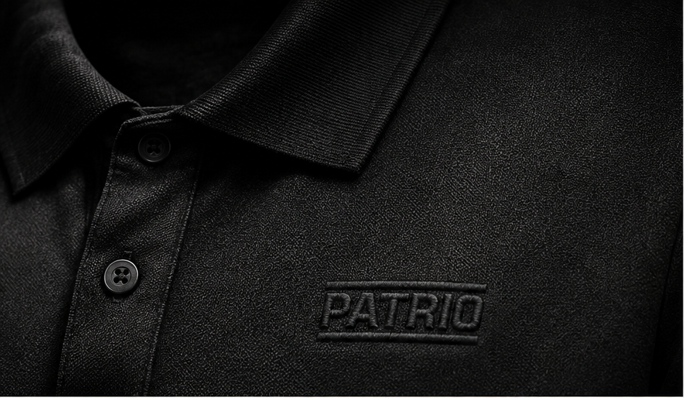
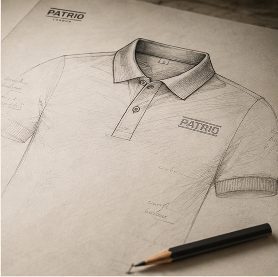
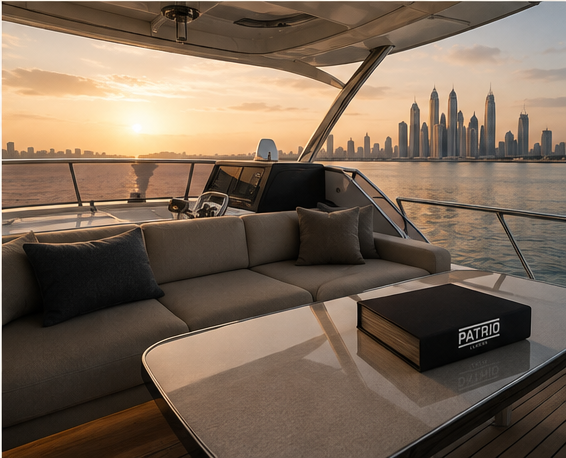

We don’t follow standards. We set our own.
PATRIO is built on a simple belief:
what you wear should reflect who you are,
not what the world expects you to be.
Quietly Distinctive.
We believe true distinction is never loud.
It is found in the details others overlook.
In the way a fabric feels.
In the way a collar stands.
In the confidence that comes from
knowing you don't need to be seen
to leave an impression.

Form follows
character.
Every element of a PATRIO piece is considered, refined and tested relentlessly—so that it performs in your everyday and endures over time.

We start with
the best.
From the world's finest cottons to carefully sourced trims, we select only what meets our uncompromising standard.
Made to be
lived in.
Our garments are crafted by expert hands in trusted ateliers that share our values of quality, ethics and respect.
Clarity in purpose.
Discipline in detail.
Timeless in spirit.
PATRIO is not just what we create.
It is how we think, how we live, and how we choose to show up in the world. It is our commitment to a life well lived—with intention, with integrity and with quiet confidence.
